From masked-gene encoders to billion-parameter cell-as-sentence LLMs — how foundation models are built for biology.
29 curated papers on the pretraining recipes behind biological foundation models. Spans rank-value masked LMs (Geneformer), contrastive teacher–student (Concerto), cell-as-sentence decoder LLMs (C2S-Scale), discrete diffusion for proteins (DPLM), masked-LM protein foundation models trained at metagenomic scale (ESM Cambrian, 2.806B sequences), genomic transformers (Nucleotide Transformer, CodonFM, Evo 2), cross-species/multimodal models (UCE, Nicheformer, scTranslator), and the data + benchmarking infrastructure (scBaseCount, the Nat Mach Intell SSL benchmark) that makes scale possible.
29Papers Covered
4Model Families
350M+Pretraining Cells
2022–2026Years Covered
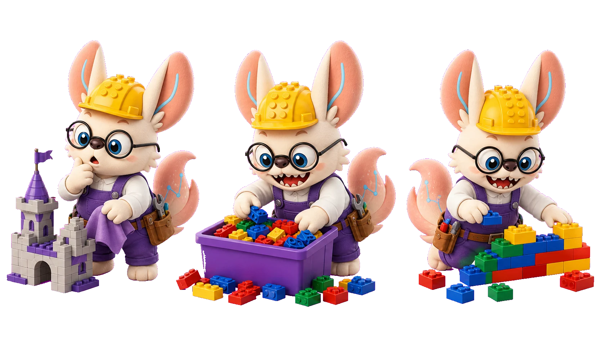
LEGO lens · pretraining
练手于散装，精修于图纸。
Pretraining is drilling on the biggest bulk bin of bricks you can find — covering one piece,
guessing it from everything around it, millions of times. 练到最后，拿起任何图纸都能拼：
train on the pile, then build anything.
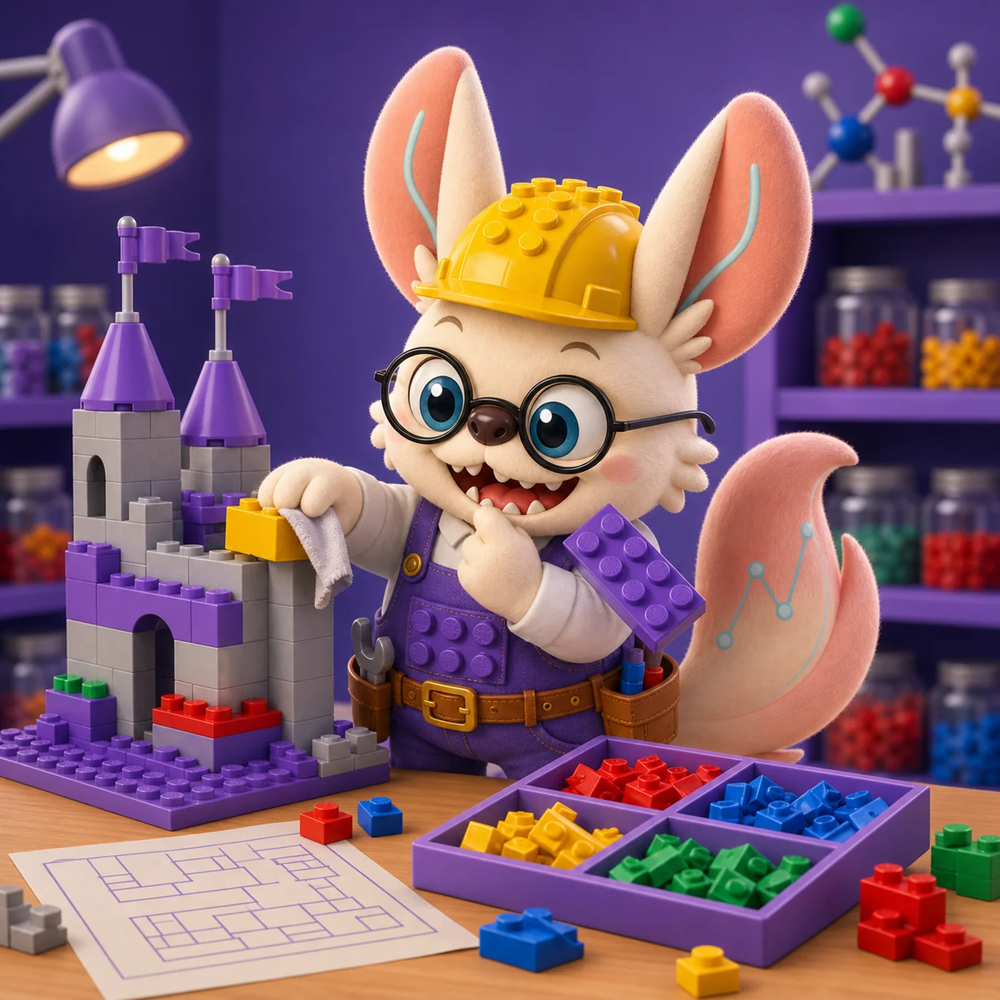
Cover One, Guess One.
「遮住一块，才学会怎么拼。」
Pretraining is the covered-brick drill: hide one piece, guess it from everything around it, until the bin of loose bricks starts to feel like a kit you already know. Six scenes from the practice bench, re-read as pretraining objectives.
Scene 1 · 遮住的那一格
The covered slot
Cover one brick of the half-built castle with a cloth. Can you name it from the bricks around it — above, below, left, right?
Masked language modeling (MLM). Hide a token, predict it from bidirectional context. See masked encoders ↓
Scene 2 · 下一块是什么
What snaps on next
Build step by step and keep asking: given everything placed so far, what is the next brick that makes sense?
Causal / autoregressive LM. Left-to-right prediction — each token from everything before it, nothing after. See autoregressive decoders ↓
Scene 3 · 打乱的城堡复原
Restore the scrambled build
Shake the table, scramble the model — then put it back. The restoration only works if you understood the structure, not the colors.
Denoising objectives. Corrupt the input, learn to reconstruct the clean version. See denoising ↓
Scene 4 · 散装零件库练手
Drilling on the bulk bin
The giant unsorted bin holds every kit mixed together — no instructions, no labels, just millions of pieces for the cover-and-guess drill.
Pretraining corpus. Broad, unlabeled data at scale — the bin covers more situations than any single kit. See the scale argument ↓
Scene 5 · 同款练习换套装
Same drill, new kit
A builder who mastered the bulk bin opens a brand-new set — and the covered-brick guess works there too, after only a few pages of new instructions.
Transfer & fine-tuning. Pretrain once, adapt cheaply — the representation from the pile transfers to every downstream kit. See adaptation ↓
Scene 6 · 零件标准化
Why the drill works at all
Every brick in the world shares the same stud system — that is the only reason practice on one kit helps with another.
Shared representation space. Pretraining learns the universal "stud system" of biology: tokens and embeddings every task can reuse. See why it transfers ↓
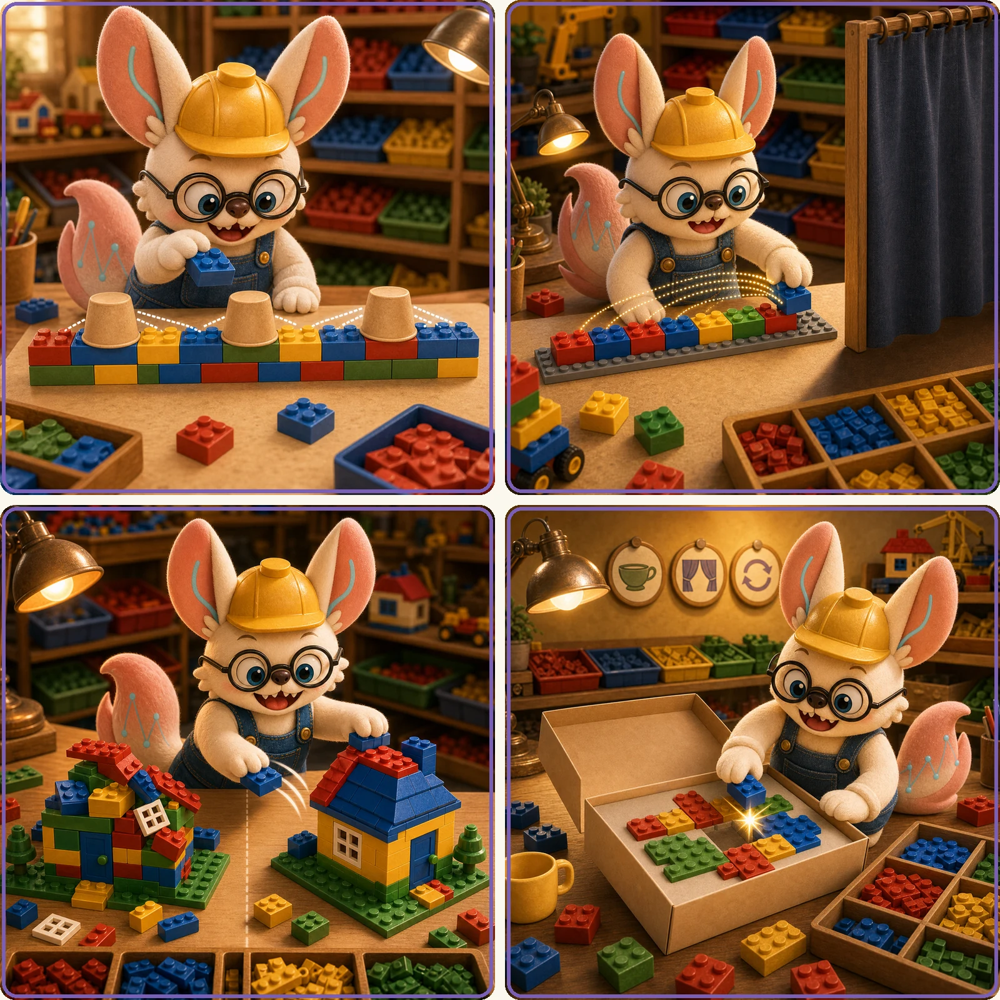
Three ways to set the exercise — hide a piece and infer it from both sides, hide the future and predict only what comes next, or scramble a build and restore it — or take the same drill to a brand-new kit. The objective differs; what you keep is the same reusable feel for which brick belongs where.
遮一万次之后，闭眼也知道下一块 —— cover enough, and the model guesses right.
Core Concepts
What "pretraining" means in biology
Pretraining is the moment a model learns its vocabulary — the substrate it will reason over later. In language: masked next-word and next-token. In single-cell biology: masked counts, ranked gene tokens, or natural-language cell sentences. The objective and the tokenisation are the two design knobs that decide everything else.
Biological pretraining is constrained by two things NLP isn't: (1) the data is sparse, noisy, and platform-confounded — UMI counts vary by 10× across protocols; (2) the underlying "language" — gene regulation — is not generated by the same process for every cell or species. So a usable scFM has to be tokenisation-robust, batch-aware, and at least somewhat cross-species transferable. The best models bake these constraints into the loss.
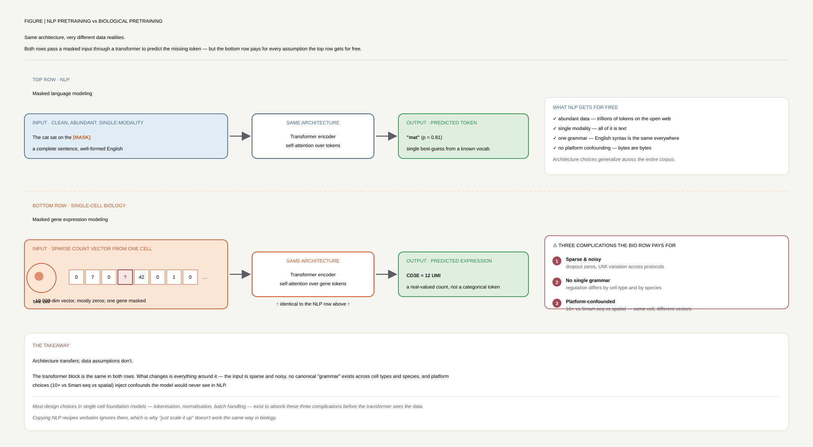
Figure 1Same architecture, different data realities. NLP gets discrete words, canonical order, and a single shared vocabulary for free; biological pretraining gets none of those. Every design choice downstream — tokenisation, masking, batch-awareness, cross-species substrate — is a workaround for one of these missing assumptions.
Self-supervision: the data labels itself
Pretraining hides part of each cell's gene profile and trains the model to fill it back in — no manual annotations required, so it scales to tens of millions of cells.
Key insight: by repeatedly guessing masked genes across millions of cells, the model is forced to learn which genes co-vary — i.e. cell biology. The downstream value isn't the guesses; it's the embedding learned along the way, which transfers to annotation, perturbation, and integration tasks.
Why it matters for biology
Transfer to small datasets. Most biological questions live in datasets of 1K–100K cells, not millions. Pretraining converts the public atlases into reusable priors — the Geneformer ablation shows dosage-sensitivity AUC 0.91 with only fine-tuning data.
Cross-species and cross-modality. UCE shows zero-shot cell-type classification across species without homolog mapping. Nicheformer learns spatial context that transfers back to dissociated scRNA-seq. These are not regular ML wins — they require the pretraining substrate to be species-agnostic.
In-silico perturbation. Geneformer's attention weights and Geneformer-scaling's quantised embeddings make virtual KO screens economical (<$5k for 4K genes × 30K cells). This is the bridge from foundation model to drug-target hypothesis.
Honest baselines matter. The 2024 SSL benchmark and 2026 Dimitrov et al. review converge on the same message: linear baselines and masked autoencoders often match contrastive and decoder-only models on standard scRNA tasks. Pretraining helps — but only when transfer matters.
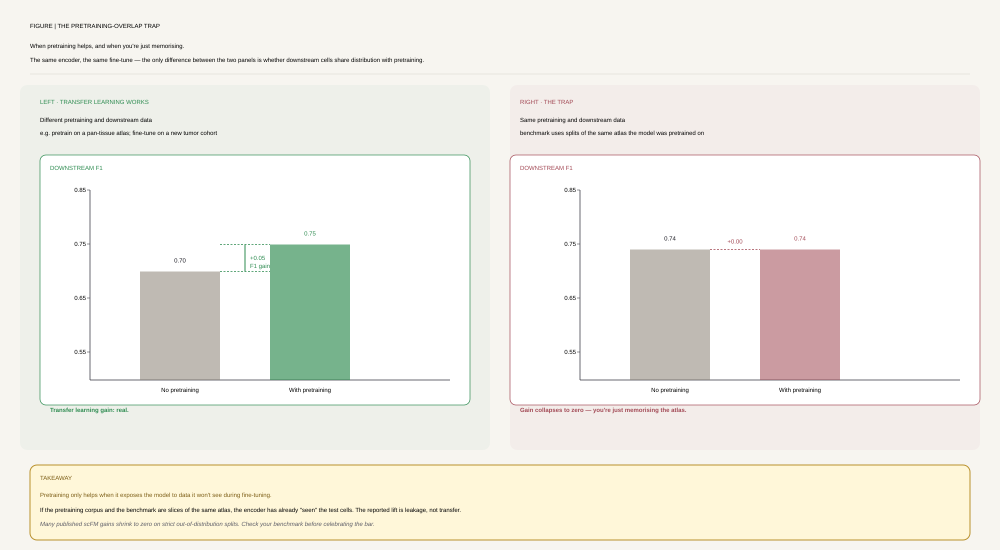
Figure 2When pretraining helps, and when you're just memorising. The 2024 SSL benchmark (Nat Mach Intell, on scTab data) made this explicit: pretraining benefit collapses to zero when the pretraining and downstream datasets overlap. Pretraining is a transfer-learning prior, not a free win — demand a benchmark that is independent of the model's training set before believing any improvement.
The four design axes
Tokenisation. Rank-value tokens (Geneformer), continuous counts (scHyena, AIDO), bag-of-RNA gene tokens (UCE), cell sentences (C2S-Scale), discrete VQ codes (CellVQ). The choice is upstream of every downstream property.
Figure 3The four design axes — a taxonomy at a glance. Every single-cell foundation model picks one option from each axis. Most innovation lives here, not in the transformer itself. Use this as a checklist when reading a new scFM paper: what did they pick, and what did they implicitly rule out?
Evolution Timeline
2022 — Contrastive scRNA pretraining
Concerto (Nat Mach Intell) shows that self-supervised teacher–student contrastive learning can be the substrate for multimodal single-cell integration at 10M-cell scale. Exceiver introduces Perceiver IO + discrete noise masking for count data.
2023 — BERT for cells, the breakout year
Geneformer (Nature) demonstrates rank-value masked LM on 29.9M cells, with attention heads that recover transcription-factor hierarchy unsupervised. scHyena replaces attention with the Hyena operator for full 19K-gene context. UCE applies ESM2 embeddings as gene tokens for cross-species transfer.
2024 — Honest benchmarking + diffusion
The 2024 SSL benchmark (Nat Mach Intell; run on scTab's 22M cells) delivers the field's first sober comparison: masked autoencoders beat contrastive on scRNA. DPLM (ICML) imports discrete diffusion into protein LMs. AIDO scales dense transformers to 650M params on 50M cells.
2025 — Cell-as-sentence and spatial integration
C2S-Scale (bioRxiv) shows transcriptomic scaling laws mirror NLP from 157M to 27B parameters. Nicheformer (Nat Methods) co-pretrains on dissociated + spatial data, enabling spatial label transfer back to scRNA-seq. scPRINT-2 reaches 350M cells.
2026 — Resource efficiency, in-context learning, and generative cross-species
Geneformer-scaling (Nat Comput Sci) brings 4-bit QLoRA to scFMs while preserving perturbation fidelity at r=0.998. STACK introduces true in-context learning for single-cell biology. CellVQ uses VQ discretisation for interpretable cell codes. TranscriptFormer (Science) makes the leap from masked encoders to autoregressive generative pretraining — predicting gene identity and count sequentially across 12 species and 1.53 billion years of evolution. On the protein side, ESM Cambrian (EvolutionaryScale) re-baselines masked-LM pretraining at metagenomic scale: 2.806B sequences (~56× ESM-2's corpus), 300M / 600M / 6B parameter trio, and the first clean log-linear contact-precision scaling law for proteins (R²=0.99) — the field's evidence that the "ESM-2 plateau" was a data ceiling, not a model ceiling. On the DNA side, Evo 2 (Arc Institute, Nature) scales single-nucleotide genomic pretraining to 9.3 trillion base pairs and 128,000+ species via a StripedHyena 2 hybrid SSM/sparse-attention backbone, reaching a 1M-token context without quadratic attention cost. GenBio AI's AIDO perspective (Nat Med) reframes single-modality scFMs as one layer of a larger AI-Driven Digital Organism — a differentiable DNA→RNA→protein→whole-cell stack — with AIDO.Cell as its first open-sourced module. Meanwhile Dimitrov et al.'s field-wide review (Nat Rev Genet) delivers the year's most systematic audit of scFM benchmarking practice: linear baselines still match scGPT and Geneformer once evaluation sets are kept independent of the pretraining corpus.
⚖️ Side-by-Side: Masked Encoder vs Autoregressive Decoder
Geneformer (2023, Nature) and TranscriptFormer (2026, Science) take the same starting material — a single-cell gene expression profile — and make opposite architectural bets: bidirectional masked-gene prediction that builds a reusable encoder, versus causal autoregressive generation that produces a full generative model of transcription.
Same input — a cell's ranked gene list — becomes very different model inputs and objectives:
Geneformer
Masked-gene BERT encoder · 2023 Nature
↓
Rank-value tokenisation
genes sorted by count ÷ corpus-median; top 2,048 emitted as token IDs; magnitudes discarded
↓
Bidirectional masked LM
15% of gene tokens masked; full context on both sides used to predict each masked gene; BERT-style encoder
The split traces back to one root decision — bidirectional masking vs causal next-token prediction — and everything follows: Geneformer gets rich bidirectional context for discriminative tasks (dosage sensitivity, KO screens, fine-tuning) but cannot generate; TranscriptFormer can sample new cells, score log-likelihoods, and transfer zero-shot across 12 species via ESM2 gene tokens, but pays for it in architecture complexity and a two-headed loss that couples gene identity to count.
Method Families
Grouped by what is being pretrained and how. Within each family, papers are ordered chronologically.
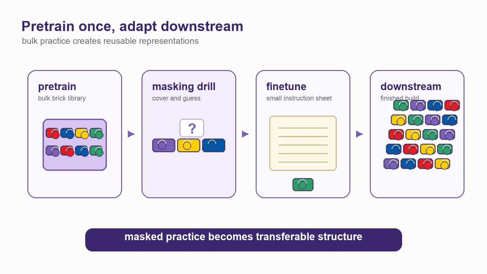
Pipeline view. Pretraining is bulk practice; fine-tuning is a smaller instruction sheet; downstream tasks reuse the structure learned from the pile.
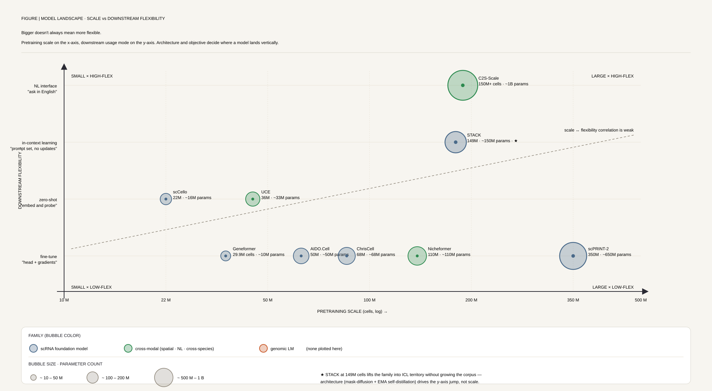
Figure 4Model landscape — scale vs downstream flexibility. Pretraining scale on the x-axis, downstream usage mode on the y-axis. Bigger doesn't always mean more flexible — architecture and objective decide vertical position. A 27B C2S-Scale and a 149M STACK reach different downstream regimes than a 316M Geneformer of similar size.
scRNA Foundation Models (11)
BERT-style and decoder-only LMs pretrained on tens to hundreds of millions of single cells. Tokenisation is the key design axis — rank values, masked counts, or cell sentences.
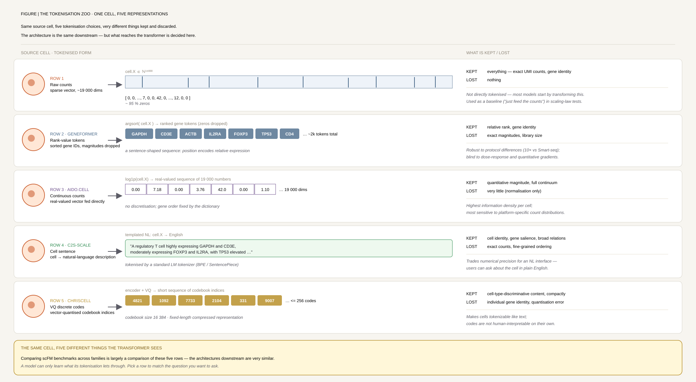
Figure 5The tokenisation zoo — one cell, five representations. Same source cell, five tokenisation choices, very different things kept and discarded. The transformer downstream is the same; what reaches it is decided here. Rank-value drops magnitude; bag-of-RNA drops order; VQ codes drop continuity; cell-sentence preserves both magnitude (via repetition) and order but pays in sequence length.
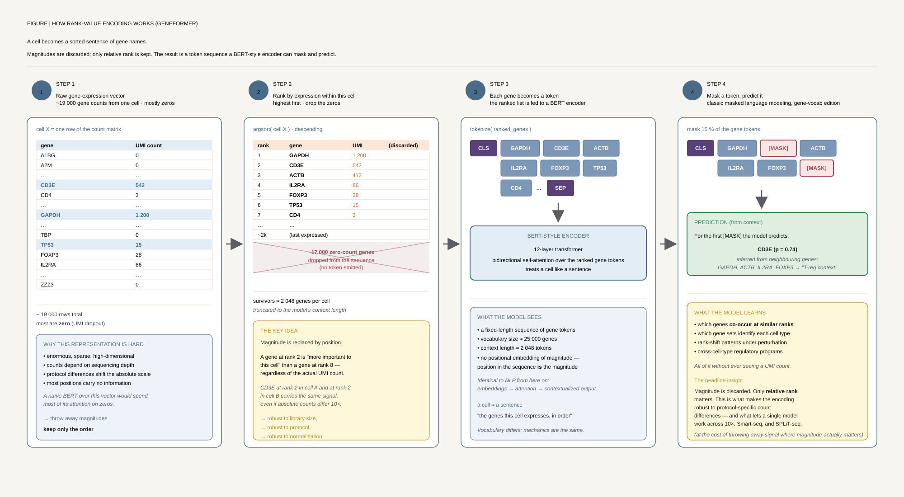
Figure 6How rank-value encoding works (Geneformer). Each cell becomes a sorted sentence of gene names. Geneformer scales each gene by count ÷ corpus-median-nonzero — deprioritising housekeeping genes and surfacing cell-state-distinguishing TFs. Magnitudes are discarded; only relative rank is kept. The result is a token sequence a BERT-style encoder can mask and predict.
Contrastive learning enables rapid mapping to multimodal single-cell atlas of multimillion scale
2022Nat Mach IntellContrastive SSL
Concerto is a self-supervised contrastive learning framework using an asymmetric teacher–student architecture for single-cell RNA and protein integration. It learns cell embeddings on a hypersphere from 31K–10M cells across multiple protocols, enabling rapid reference mapping and multimodal fusion without labelled data.
Exceiver applies Perceiver IO to full 19K-gene single-cell transcriptomes with linear-complexity cross-attention. Pretrained on Tabula Sapiens via Discrete Noise Masking, it learns regulatory relationships and transfers to disease and drug-response tasks.
Introduces Discrete Noise Masking objective for count data; 0.73 explained variance vs continuous baselines
30× faster fine-tuning convergence (10 epochs vs 350) when transferring to new scRNA datasets
Gene embeddings cluster functionally; 66% of clusters enriched for STRING-network interactions
Transfer learning enables predictions in network biology
2023NatureBERT encoder
Geneformer is a context-aware BERT-style transformer pretrained on 29.9M human single-cell transcriptomes using rank-value encoding and masked-gene prediction. It enables transfer learning for network biology, dosage sensitivity, and in-silico perturbation with limited downstream data.
AUC 0.91 for dosage sensitivity, 0.81 for network hierarchy — vs SVM 0.75, RF 0.72
Predicts therapeutic targets validated in cardiac tissue: GSN and PLN knockouts improve contractile stress
Attention heads learn hierarchy unsupervised: 20% of heads attend transcription factors significantly more than other genes
scHyena: Foundation Model for Full-Length Single-Cell RNA-Seq Analysis in Brain
2023arXivHyena operator
scHyena replaces attention with the bidirectional Hyena operator to process full 19.3K-gene transcriptomes in O(L log L) time. Pretrained on brain scRNA-seq, it targets cell-type classification, doublet detection, and imputation without requiring HVG selection.
First continuous-valued Hyena application to scRNA-seq; 5× lower imputation MSE than MAGIC (0.133 vs 0.694–1.279)
Cell-type F1 0.984–0.998 across four brain datasets; bidirectional context over the full transcriptome
Doublet detection F1 0.916–0.982 (vs DoubletFinder 0.435–0.962); batch correction emerges from imputation
Cell ontology guided transcriptome foundation model
2024NeurIPSOntology-guided transformer
scCello is a 10.7M-parameter transformer foundation model trained on 22M cells covering 398 cell types. It integrates the Cell Ontology via Personalized PageRank contrastive learning, yielding ontology-aware representations and strong zero-shot novel-cell-type recognition.
First TFM to fold cell-ontology structure into pretraining via PPR contrastive loss
76.8% accuracy on novel cell-type classification; +16.1% AvgBio clustering (ID) and +12.1% (OOD)
60× fewer parameters than UCE 650M while topping 6 downstream tasks
Scaling Large Language Models for Next-Generation Single-Cell Analysis (Oct update)
2025bioRxivCell-as-sentence LLM
October update of the C2S-Scale family — decoder-only LLMs (157M to 27B parameters) trained on 1B+ tokens from 5.7M single cells represented as natural-language cell sentences. Supports zero-shot clustering, perturbation prediction, and spatial reasoning over multi-cell context.
Clear scaling laws: 15.2% accuracy gain from 157M → 27B
Zero-shot perturbation Pearson r=0.78 vs scGPT 0.74 on Replogle screens
Experimentally validated silmitasertib: 2.1× MHC-II+ macrophage induction under IFN-γ (p<0.0001)
scPRINT-2: Towards the next-generation of cell foundation models and benchmarks
2025bioRxivEncoder + XPressor
scPRINT-2 is a 20M-parameter encoder-compressor-decoder pretrained on 350M cells across 16 organisms. Introduces the XPressor compression module, GNN-based multi-cell expression encoding, and hierarchical classification, with counterfactual reasoning via cell-embedding swaps.
Largest pretraining corpus to date: 350M cells, 16 organisms, ~400K genes
75% zero-shot cell-type classification on the Open Problems benchmark
Imputes a 5000-gene Xenium spatial panel at parity with denoised genes
STACK is a tabular-attention foundation model trained on 149M cells that performs true in-context learning at the cell-set level. Intra- and inter-cellular multi-head attention over learned gene-module tokens enables zero-shot perturbation, donor, and condition transfer.
First in-context-learning scFM: ranks 1st in 28/31 ICL evaluations
100 gene-module tokens per cell, 75% mapping to single GO pathways — more scalable than per-gene tokens
Illuminating cell states by a comprehensive and interpretable single-cell foundation model
2026Nat CommunDiscrete VQ + GAT
CellVQ is a 511M-parameter foundation model trained on 68M cells. Introduces Single-Cell Discretization (SCD) via SoftCVQ to convert continuous embeddings into a 65,536-code vocabulary, integrates Gene Ontology priors, and supports a plug-in graph attention layer (CellVQ-Graph).
Pancreas clustering ARI 0.95 (vs scGPT <0.77); drug response Pearson 0.923 (vs DeepCDR 0.780)
Pretrained models over DNA/codon sequence. Scale from millions to billions of parameters with multispecies and megabase context.
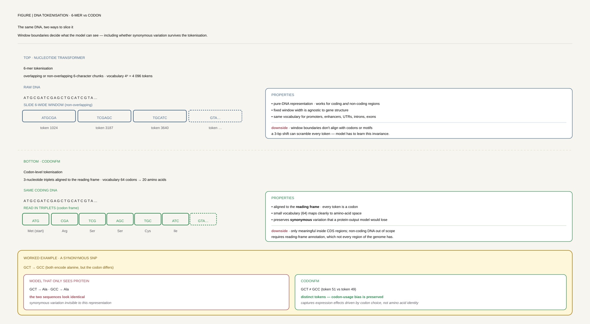
Figure 7The same DNA, two ways to slice it. Window boundaries decide what the model can see — including whether synonymous variation survives. 6-mer tokenisation (Nucleotide Transformer) gives a fixed 46=4096 vocabulary but blurs reading frames. Codon tokenisation (CodonFM/EnCodon) respects the 3-bp frame and preserves the silent-mutation signal that drives translation-efficiency and mRNA-stability biology.
Nucleotide Transformer: building and evaluating robust foundation models for human genomics
2024Nat MethodsDNA transformer
Nucleotide Transformer is a family of DNA transformers (50M–2.5B params) trained with 6-mer tokenisation and masked LM. NT-v2 introduces rotary embeddings and SwiGLU activations and matches or exceeds supervised BPNet on 14 of 18 genomic tasks with 50× fewer parameters.
NT-v2 250M reaches best score (MCC 0.769) across 18 tasks: histone marks, enhancers, promoters, splice sites
Multispecies 2.5B model (850 genomes) matches/exceeds BPNet on 14/18 tasks; zero-shot AUC 0.7–0.8 for functional variants
NT-v2 50M matches NT-v1 500M via rotary + SwiGLU; 50× parameter reduction with context extended 6kb → 12kb
Learning the Language of Codon Translation with CodonFM
2024PreprintCodon-level BERT
CodonFM introduces EnCodon, a family of codon-level transformer encoders (80M–1B params) trained on 130M+ coding sequences from 22K species using codon-frequency-weighted masking. Targets synonymous-variant pathogenicity, missense effect prediction, and mRNA design.
ClinVar synonymous variant pathogenicity −log10 p=3.2 vs mRNA-FM 1.5
Missense effect prediction −log10 p=35 (DDD) vs scGPT 25
Zero-shot mRNA design: R²=0.50 for translation efficiency; ρ=0.70 for protein expression
Evo 2 (Arc Institute, StripedHyena 2 architecture) trains 7B and 40B-parameter hybrid state-space/attention models on 9.3 trillion base pairs spanning 128,000+ species across all domains of life — prokaryotes, eukaryotes, and organelles. Single-nucleotide tokenisation with near-linear compute/memory scaling gives a 1-million-token context window without the quadratic cost of full self-attention.
Largest genomic pretraining corpus to date: 9.3T bp across 128,000+ species, at single-nucleotide resolution with no k-mer binning
1M-token context via StripedHyena 2 (interleaved SSM + sparse-attention blocks) — enables whole-gene and regulatory-region modelling in one forward pass
Sequence-level pretraining for proteins — masked LM, autoregressive, and diffusion-style generative models.
Language Modeling Materializes a World Model of Protein Biology (ESM Cambrian)
2026EvolutionaryScaleMasked-LM, metagenomic scale
ESMC is a three-scale masked-LM family (300M / 600M / 6B parameters; 30 / 36 / 80 transformer layers) trained on 2.806 billion sequences — UniRef 2023_02 (156M) + JGI/IMG (2.029B) + MGnify 2023_02 (621M) — roughly 56× the 50M UniRef50 corpus used by ESM-2. Standard MLM objective ℒ = 𝔼[−Σ log p(xᵢ | x\M)] over randomly masked residues. Three development models trained slightly past compute-optimality fit the empirical scaling curve; the 6B is the predicted compute-optimal point.
Clean log-linear scaling law for proteins. P@L-LR = 0.115 × log₁₀(FLOPs) − 1.98, R² = 0.99 — long-range contact precision improves predictably with compute through 6B parameters without plateauing. Extrapolation residual at 1.63×10²³ FLOPs is only −0.007 P@L-LR.
Data scale, not model scale, was the bottleneck. ESM-2 (UniRef50, 50M) hit diminishing returns at 650M–15B parameters; ESMC's metagenomic corpus restores log-linear gains at the same model sizes, isolating the cause to training-data ceiling.
Where information lives by depth. Layer-wise probes show enzyme-classification accuracy (k-NN over EC numbers, n=8,493 proteins across 57 classes) peaks at layers 50–60 of ESMC-6B; long-range tertiary contact precision peaks in the final layers — function and structure separate cleanly across depth.
The "world model" framing. Sparse autoencoders trained on layer-60 representations (2¹³–2¹⁷ feature widths, 8B token corpus) decompose the latent space into 16,384 monosemantic features spanning residue identity → secondary structure → tertiary motif → domain/fold → disorder → biochemical environment → localisation → functional site. Unsupervised pretraining alone recovers the reductionist hierarchy biologists built by hand.
Atlas downstream of pretraining. The 6B encoder is run over 6.8B proteins; clustering by SAE-feature Jaccard ≥ 0.6 yields 7.7M clusters with ≥50 members; ESMFold2 then predicts 1.1B structures (418.5M at pLDDT > 0.7), of which 756M are not in AlphaFold DB.
Diffusion Language Models Are Versatile Protein Learners
2024ICMLDiscrete diffusion LM
DPLM combines discrete diffusion with a transformer for protein sequences, unifying generative and predictive capabilities. Trained on 45M UniRef50 sequences (≈14B tokens), it supports unconditional generation, representation learning, and structure-conditioned design.
First discrete-diffusion protein LM; 650M and 3B variants generate proteins with pLDDT > 80
Outperforms ESM-2 on thermostability, EC classification, and subcellular localisation
Supports motif-scaffolding tasks: 100 sequences sampled per 17 design problems
Models pretrained across modalities (RNA + protein, RNA + spatial, image + text). Cross-species and cross-platform transfer.
TranscriptFormer: A Generative Cell Atlas Across 1.5 Billion Years of Evolution
2026ScienceAutoregressive generative
TranscriptFormer is a family of generative autoregressive single-cell foundation models trained on up to 112M cells across 12 species spanning 1.53 billion years of evolution. Unlike masked-LM scFMs (Geneformer, scGPT) it treats each cell as a "cell sentence" of (gene, count) pairs and learns the joint distribution by predicting next gene + next count under causal masking. Three variants — TF-Metazoa (112M cells, 12 species), TF-Exemplar (110M cells, human + 4 model organisms), TF-Sapiens (57M human cells) — share identical 12-layer architecture (302M active params) and are trained on ~3.5 trillion tokens.
Two-headed autoregressive objective. At each step the model samples a gene from a categorical distribution conditioned on previously selected genes (cross-entropy loss on gene identity), then samples its count from a zero-truncated Poisson distribution conditioned on that gene (NLL loss on count). Causal masking + log-likelihood maximisation = composite loss.
Expression-aware attention. Gene counts enter as additive bias terms inside attention logits, ensuring higher-count genes deterministically dominate the attention pattern without needing a separate expression-value token.
ESM2 protein-embedded gene tokens + explicit assay token — enables zero-shot transfer to species never seen in pretraining (mouse lemur, tropical clawed frog, sea lamprey, stony coral) with F1 > 0.65 on stony coral (685M yrs divergence).
Multi-species sampling. Low-resource species upweighted to balance the dataset; adding phylogenetic diversity improves cross-species F1 without hurting in-distribution human performance (tables S3–S4).
State-of-the-art on Tabula Sapiens 2.0 (post-training holdout): TF-Exemplar macro F1 = 0.910 ± 0.001, beating UCE (0.906), scGPT (0.798), Geneformer (0.797). SARS-CoV-2 infection classification F1 = 0.859 (TF-Sapiens) vs UCE 0.779, scGPT 0.774.
Emergent phylogeny. Pairwise cell-embedding cosine similarity decreases with evolutionary distance (Spearman r = −0.705, p = 0.004) even though TF-Metazoa is trained on a single species (chicken) from that test set — phylogenetic structure emerges unsupervised.
Universal Cell Embeddings: A Foundation Model for Cell Biology
2023bioRxivESM2-based encoder
UCE is a self-supervised foundation model that uses protein-language-model embeddings (ESM2) as gene representations and a transformer encoder to map 36M cells across species into a universal embedding. It enables zero-shot cross-species cell-type classification via a 'bag-of-RNA' protocol.
Integrated Mega-scale Atlas of 36M cells across many species — zero-shot transfer across species without fine-tuning
Figure 8How UCE transfers across species — bag-of-RNA with ESM2 gene tokens. Each gene is replaced by its ESM2 protein-sequence embedding. Homologous proteins land in nearby vectors, so the species alignment is automatic — no homolog mapping needed. Expression count is encoded by sampling frequency into the bag, not a separate value token.
Nicheformer: a foundation model for single-cell and spatial omics
2025Nat MethodsSpatial-aware transformer
Nicheformer is the first transcriptomic foundation model to jointly pretrain on dissociated and spatial single-cell data (110M+ cells: 57M dissociated + 53M spatial). Technology-aware rank tokens and a transformer encoder yield spatially-aware cell embeddings transferable back to scRNA-seq.
Niche label F1 0.82 (vs Geneformer 0.67); region F1 0.78 vs 0.58
Density prediction R² +0.25 (vs scVI −3.0); dissociated-only models can't recover spatial signal
Transfers spatial labels to scRNA-seq: 9/33 motor-cortex cell types and 95.3% of cells annotated to isocortex
Figure 9Why dissociated-only models cannot recover spatial signal. It's not a scale problem. It's a data-type problem. No amount of dissociated cells substitutes for spatial cells — adding 3× more dissociated cells does nothing for niche or density prediction. The spatial signal must be in the pretraining data, not just any data. This is the clearest single counterexample to "just scale the model" in the pretraining literature, and the empirical case for joint multimodal pretraining over post-hoc adaptation.
A pre-trained large generative model for translating single-cell transcriptomes to proteomes
2025Nat Biomed EngRNA → protein seq2seq
scTranslator is a 117M-parameter encoder–decoder transformer pretrained in two stages (bulk → single-cell) on 82 datasets (18K bulk samples, 2M+ cells). Gene Positional Encoding and FAVOR+ attention enable few-shot prediction of 1000-protein panels from scRNA-seq across tissues and species.
Beats cTP-net / sciPENN / Seurat by 6.6–80.7% in few-shot protein prediction
Cross-species/modality generalisation: cosine > 0.7 on CITE-seq, mouse spatial, NEAT-seq
Predicts cytokine-perturbation proteomes (STAT1, JAK1/JAK2, IFNGR1/IFNGR2) with cosine > 0.8
Datasets, pipelines, and curation systems that make foundation-scale pretraining possible.
scBaseCount: an AI agent-curated, uniformly processed, and continually expanding single-cell data repository
2025bioRxivData resource
scBaseCount is the largest standardised public scRNA-seq repository (230M+ cells, 21 organisms, 72 tissues), built with an AI-agent curation pipeline (SRAgent) and a STARsolo-based Nextflow processing engine (scRecounter). Produces Gene / GeneFull / Velocyto matrices and reduces technical variance for downstream foundation-model training.
230M cells across 21 organisms / 72 tissues, uniformly processed
SRAgent identified 43,587 10X datasets out of 63,892 SRA experiments — autonomous curation at 3–5 datasets per 5 minutes
4% lower technical variance in PC1 vs raw aggregation — better substrate for FM pretraining
Field syntheses and systematic comparisons of pretraining strategies.
Delineating the effective use of self-supervised learning in single-cell genomics
2024Nat Mach IntellSSL benchmark
Systematic benchmark of self-supervised pretraining on 22.2M cells (scTab) comparing masked autoencoders vs contrastive learning across transfer, zero-shot, and cross-modality tasks. Finds that masked autoencoders dominate in single-cell genomics — opposite to vision-domain trends.
Transfer learning gain is real (PBMC F1 0.701 → 0.747) but vanishes when pretraining on the same dataset
Masked autoencoders > contrastive methods; zero-shot F1 0.673 on scTab test set
Genomic language models: opportunities and challenges
2024Trends GenetReview
Field review of 40+ genomic language models (DNABERT, NT, HyenaDNA, EVO) spanning transformer, state-space, and CNN-hybrid architectures. Analyses variant-effect prediction, sequence generation, and cross-species generalisation, with trade-offs in context length, compute, and constraint prediction.
Taxonomy of 40+ gLMs with architecture, scaling, and pretraining objectives
Variant-effect AUROC 0.6–0.8 across models; state-space models reach megabase context
Identifies the 3.3%-of-genome constraint problem — careful data curation needed
Large language models in bioinformatics: applications and perspectives
2024Brief BioinformReview
Comprehensive review of how transformer-based language models (BERT, GPT, ESM, scBERT, scGPT, RNA-FM, ChemBERTa) have been adapted across genomics, transcriptomics, proteomics, drug discovery, and single-cell analysis. Synthesises the pretrain → fine-tune paradigm for biological sequences.
Taxonomy of 100+ biological LLMs across five domains with performance summaries
Documents DNABERT-2 vs DNABERT on 23/28 GUE datasets; scFoundation on 50M cells
Multimodal foundation transformer models for multiscale genomics
2025Nat MethodsPerspective
Perspective taxonomising 91 transformer models into three tiers: unimodal (scBERT, Geneformer, DNABERT), augmented unimodal (Enformer), and multimodal (scGPT, scCLIP, Nicheformer). Proposes a 'Super Transformer' to unify DNA, RNA, ATAC, spatial, protein, image, and text modalities.
First systematic three-tier taxonomy of 91 transformer models in multiscale genomics
Documents the rise of LLM-integrated models for biological data interpretation
Interpretation, extrapolation and perturbation of single cells
2026Nat Rev GenetBenchmark · Critique
Dimitrov, Schrod, Rohbeck et al. propose a unifying ontology of five modelling concepts — interpret, extrapolate, decompose, trace, intervene — for judging when a causal or foundation-model claim about single-cell data is actually warranted. Documents that linear baselines match or exceed foundation models (scGPT, Geneformer) on standard perturbation-prediction benchmarks once the evaluation set is independent of the pretraining corpus.
Five causal aims with concrete method exemplars for each — a checklist for what "causal" or "foundation model" claims actually mean in a given paper
"Linear beats foundation model" — a sober, systematic accounting of when scale claims do and don't translate into real predictive advantage
Roadmap for translating causal/mechanistic claims into testable biological hypotheses rather than leaderboard numbers
Song, Segal & Xing (GenBio AI) lay out an architectural blueprint for an AI-Driven Digital Organism (AIDO): a hierarchical system of multiscale foundation models spanning DNA, RNA, protein, and whole-cell behaviour, connected by shared central-dogma sequence encoders and a differentiable computation graph — positioned as the successor paradigm to single-modality scFMs like the ones catalogued above.
Central-dogma foundation-model stack (DNA → RNA → protein) with shared positional encodings bridging sequence and spatial context across scales
Differentiable multi-scale computation graph enabling bidirectional information propagation between molecular, cellular, and whole-organism levels
Frames a virtual-cell "world model" as the endpoint capability: condition on a cell state, apply an intervention, roll out the counterfactual trajectory
AIDO.Cell (open-sourced earlier in this catalogue) is Phase 1 of this roadmap; a commercial AIDO Cell world model entered closed alpha in August 2026
Quick reference: which pretraining recipe to reach for given your scale, modality, and downstream task.
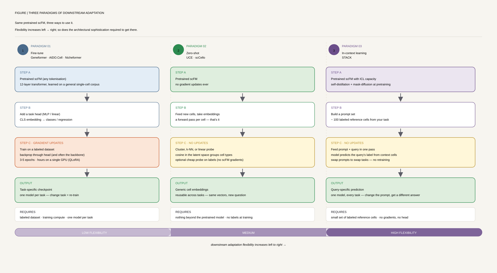
Figure 10Three paradigms of downstream adaptation — same pretrained scFM, three ways to use it. Flexibility increases left → right; so does the architectural sophistication required to get there. Fine-tuning is universal but needs labelled data and per-task training. Zero-shot needs a substrate that already encodes the right structure (UCE, scCello). ICL (STACK) needs the model to have been trained on cell-set-level inputs in the first place — it's not a free downstream choice.
Model
Family
Scale
Best for
Key detail
Geneformer
scRNA FM
29.9M cells, BERT
Network biology, in-silico perturbation
Rank-value encoding
C2S-Scale
scRNA LLM
5.7M cells, decoder-only
Natural-language reasoning, virtual screens
Cells as gene sentences
scPRINT-2
scRNA FM
350M cells
Denoising, spatial imputation
Encoder + XPressor compression
UCE
Cross-species
36M cells, ESM2 gene tokens
Zero-shot cross-species transfer
Bag-of-RNA, no homolog mapping
Nicheformer
scRNA + spatial
110M cells
Spatial label transfer to scRNA-seq
Tech-aware rank tokens
Nucleotide Transformer
Genomic LM
850 genomes, 2.5B params
Variant effect, regulatory function
6-mer tokenisation
DPLM
Protein LM
45M UniRef50 sequences
Protein generation + design
Discrete diffusion
AIDO.Cell
scRNA FM
50M cells, 3M–650M params
Full transcriptome, perturbation
FlashAttention-2 dense
STACK
scRNA ICL
149M cells
Zero-shot perturbation transfer
True in-context learning
Geneformer-scaling 2026
QLoRA scFM
316M params, 4-bit
Resource-efficient virtual screens
QLoRA preserves embeddings
TranscriptFormer
Cross-species generative
112M cells, 12 species
Zero-shot expression generation, cross-species transfer
The clearest demonstration of rank-value masked LM on real-world single-cell data. Required reading — the architecture and ablations show what a usable scFM looks like.
2. SSL Benchmark (2024, Nat Mach Intell)
The reality check: a head-to-head comparison of masked autoencoders vs contrastive learning across 22M cells. Read this before believing any new scFM's claims.
3. UCE (2023, bioRxiv)
Cross-species cell embeddings via ESM2 gene tokens. The cleanest example of how pretraining substrate decides what transfers.
4. Nicheformer (2025, Nat Methods)
Joint pretraining on dissociated + spatial data — and why dissociated-only models fundamentally cannot capture spatial signal even with 3× the cells.
5. C2S-Scale (2025, bioRxiv)
The first credible NLP-style scaling law for transcriptomics. Read alongside the Geneformer-scaling 2026 paper for the QLoRA efficiency angle.
6. STACK (2026, bioRxiv)
Where the field is heading: in-context learning at the cell-set level, with cross-tissue and cross-perturbation generalisation.
Practical Implementation Guide
If your goal is transfer learning to a small dataset
Use a pretrained Geneformer or scFoundation(Hao et al., Nature Methods 2024, DOI 10.1038/s41592-024-02305-7) checkpoint and fine-tune. With the new 4-bit Geneformer-scaling recipe, full fine-tuning of 316M parameters fits on a single consumer GPU. Don't pretrain from scratch unless you have >10M cells and a real domain shift.
If your goal is cross-species or cross-platform
UCE (ESM2 gene tokens, no homolog map) or scCello (ontology-guided contrastive) are the strongest zero-shot transfer recipes. Avoid models that rely on tokenisation-by-gene-symbol if your target species isn't in the pretraining set.
If your goal is spatial transcriptomics
Nicheformer is the only model trained on spatial + dissociated jointly. The Nicheformer evaluation shows dissociated-only scFMs (Geneformer, scGPT, scFoundation) cannot recover niche signal — adding more cells does not fix this.
If your goal is virtual perturbation / target ID
Pipeline: pretrained Geneformer → fine-tune on your disease atlas → in-silico KO via attention or embedding perturbation. STACK's in-context recipe is the new alternative — no fine-tune, just provide a labeled prompt cell set. For protein-level outputs, chain scTranslator after the cell-state predictor.
If your goal is whole-cell multi-scale simulation
The field is moving beyond scRNA-only foundation models. AIDO (GenBio AI) integrates DNA, RNA, protein, and regulatory networks into a single differentiable world model — condition on a cell state, apply a genetic or chemical perturbation, and read out the rollout across molecular scales. The world-model API is currently in closed alpha (as of August 2026); for an open-source entry point today, use AIDO.Cell (the same pretrained weights, catalogued above) for standard scRNA tasks while the full simulator API opens up.
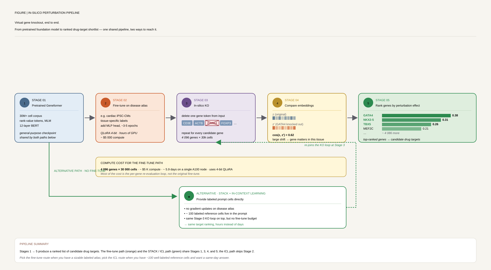
Figure 11Virtual gene knockout, end to end. From pretrained scFM to ranked drug-target shortlist — one shared pipeline, two ways to reach it. The Geneformer route fine-tunes then perturbs attention/embeddings (cosine-shift methodology, ~$5k for a 30K-cell × 4K-gene screen with QLoRA quantization). The STACK route uses ICL: provide a labelled prompt cell-set with the perturbation and ask the model to generate counterfactual cells, no weight updates required.
Common Pitfalls
"Foundation model" is not a capability claim. Linear baselines match scGPT/Geneformer on standard perturbation benchmarks (see Dimitrov et al. 2026). Demand task-specific evidence, not generic scale arguments.
Pretrain on the same dataset you fine-tune on and you get nothing. The 2024 SSL benchmark shows pretraining benefit collapses to zero when the pretraining and downstream datasets overlap.
Tokenisation is destiny. Rank-value tokens lose magnitude information; continuous tokens are harder to mask. Bag-of-RNA loses gene order. Choose the pretraining recipe whose tokenisation matches your downstream task.
Quote-the-paper benchmarks vs production benchmarks differ. CausalBench (Perturb-seq) and scTab give very different rankings than the curated dataset each paper trained on. Always evaluate on a benchmark that is independent of the model's training set.
Multimodal does not mean multimodal-aware. Models that concatenate modalities at input are not the same as models that pretrain a joint objective. Nicheformer's spatial pretraining beats post-hoc spatial fine-tuning of Geneformer.
Scale before quality. 154K curated chest-CT pairs beat 15M+ web pairs (MedMPT). For biological data where curation is expensive, this is almost always the right trade.
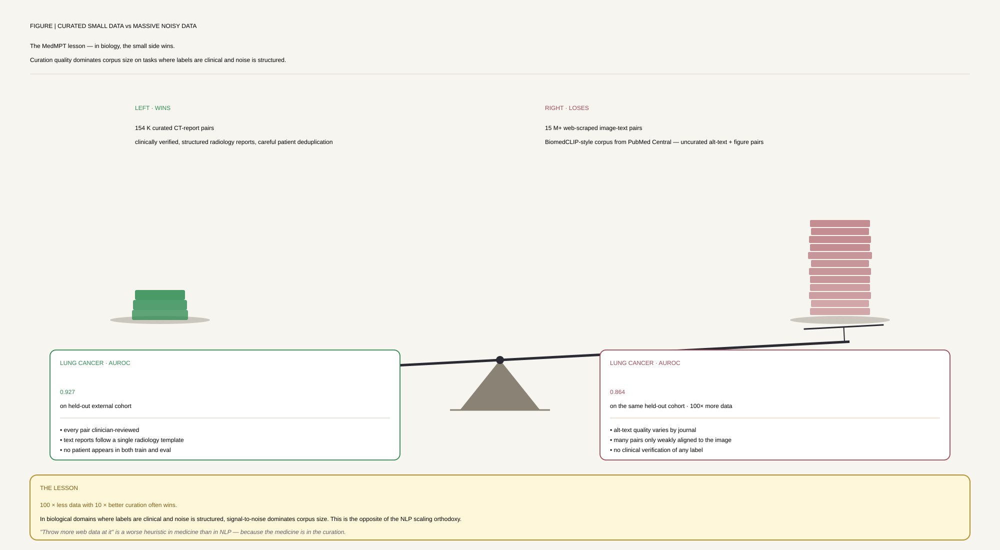
Figure 12The MedMPT lesson — in biology, the small side wins. Curation quality dominates corpus size on tasks where labels are clinical and noise is structured. The same pattern recurs across single-cell: ~10M well-annotated CELLxGENE cells often beat 100M+ heterogeneously-processed cells. Budget curation, not scraping, when your downstream task is clinical.
🛠️ Hands-On Practice
The exercises below walk through the core mechanics of self-supervised pretraining: streaming and tokenising a large corpus, packing sequences into fixed-length blocks, and running a masked-language-model or causal-LM pretraining loop with Hugging Face Trainer. The same pipeline applies to scRNA gene-token corpora (swap the tokenizer for a gene-vocabulary one) or DNA k-mer corpora (swap for a nucleotide tokenizer).
Environment & packages
All packages below are available on PyPI. flash-attn requires a CUDA-capable GPU and the matching CUDA toolkit; install it last so the other packages can be resolved first.
Hardware. A single A100-40GB is enough for the minimal walkthrough (batch size 8, sequence length 512, BERT-base-scale model); multi-GPU or DeepSpeed ZeRO-3 is needed for anything above ~1B parameters or sequence lengths ≥2048. For interactive exploration on a laptop, reduce max_steps to 100 and use CPU.
Data structures & formats
Streaming datasets.Dataset / IterableDataset. Arrow-backed on disk or streamed from Hugging Face Hub; avoids loading billions of tokens into RAM. Use datasets.load_dataset(..., streaming=True) for large corpora.
Packed sequences (block size). Raw documents are concatenated with an EOS separator then sliced into fixed block_size windows (e.g., 512 or 1024 tokens). This eliminates padding waste and is essential for throughput at scale.
Tokenizer (tokenizers.Tokenizer). A BPE or WordPiece vocabulary trained on your domain corpus. For biology, train on gene-symbol or k-mer vocabularies rather than reusing a text tokenizer — domain mismatch is a leading cause of silent performance loss.
DataCollatorForLanguageModeling. Handles random masking (MLM, mlm=True, default 15%) or causal shifting (mlm=False) at collation time — no need to pre-mask the dataset.
Checkpoints & sharding. Hugging Face Trainer saves pytorch_model.bin or sharded model.safetensors (for models >2GB). Set save_total_limit to avoid filling disk with intermediate checkpoints.
Scaling-law variables. Track N (parameters), D (training tokens), and C ≈ 6ND (FLOPs). The Chinchilla compute-optimal ratio is D ≈ 20N tokens per parameter — a 125M-parameter model should see ~2.5B tokens before you plateau.
Minimal code walkthrough
Stream a public text corpus (swap wikitext for your biological corpus), tokenise and group into fixed-length blocks, then run a few MLM pretraining steps with Trainer — the same skeleton works for causal LM by setting mlm=False and swapping BertForMaskedLM for GPT2LMHeadModel.
from datasets import load_dataset
from transformers import (
AutoTokenizer, BertConfig, BertForMaskedLM,
DataCollatorForLanguageModeling, Trainer, TrainingArguments,
)
# 1. Stream corpus (replace with your biological data path or HF dataset id)
raw = load_dataset("wikitext", "wikitext-103-raw-v1", split="train", streaming=True)
# 2. Tokenise
tok = AutoTokenizer.from_pretrained("bert-base-uncased") # swap for domain tokenizer
BLOCK = 512
def tokenise(batch):
return tok(batch["text"], truncation=False, padding=False)
def group_into_blocks(examples):
# concatenate all token ids, then slice into BLOCK-sized chunks
ids = sum(examples["input_ids"], [])
total = (len(ids) // BLOCK) * BLOCK
ids = ids[:total]
return {"input_ids": [ids[i:i+BLOCK] for i in range(0, total, BLOCK)]}
tokenised = raw.map(tokenise, batched=True, remove_columns=["text"])
blocked = tokenised.map(group_into_blocks, batched=True)
# 3. Model (BERT-base scale: 110M params)
cfg = BertConfig(vocab_size=tok.vocab_size, hidden_size=768,
num_hidden_layers=12, num_attention_heads=12,
intermediate_size=3072, max_position_embeddings=BLOCK)
model = BertForMaskedLM(cfg)
# 4. Collator — applies 15 % random masking at batch time
collator = DataCollatorForLanguageModeling(tokenizer=tok, mlm=True, mlm_probability=0.15)
# 5. Training — warmup + cosine LR schedule; resume from checkpoint if present
args = TrainingArguments(
output_dir="./pretrain_ckpt",
max_steps=500, # increase to millions for real pretraining
per_device_train_batch_size=8,
gradient_accumulation_steps=4, # effective batch 32
learning_rate=1e-4,
lr_scheduler_type="cosine",
warmup_steps=50,
fp16=True,
logging_steps=50,
save_steps=250,
save_total_limit=2,
dataloader_num_workers=2,
)
trainer = Trainer(model=model, args=args, train_dataset=blocked,
data_collator=collator)
trainer.train() # add resume_from_checkpoint="./pretrain_ckpt/checkpoint-250" to resume
Common pitfalls & tips
Data quality and deduplication. Duplicate documents inflate apparent perplexity gains and contaminate downstream eval sets. Run MinHash LSH deduplication (e.g., datasketch.MinHashLSH) before pretraining — ESM Cambrian's data-scale lesson is partly a data-cleaning lesson.
Tokenizer domain mismatch. Reusing a general-text BPE tokenizer on gene symbols or DNA k-mers fragments tokens arbitrarily. Train a fresh tokenizer on your corpus with tokenizers BPE trainer; expect 20–40% efficiency gain in tokens-per-document.
Sequence packing and attention masking. When packing multiple documents into one block, use an attention mask that prevents cross-document attention (pass attention_mask with zeros at document boundaries), or accept a small amount of cross-contamination which is common in practice for large corpora.
Learning-rate warmup and schedule. Skipping warmup with a large LR causes loss spikes early in training that compound. Use at least 1% of total steps for linear warmup followed by cosine or polynomial decay; the Geneformer recipe uses a linear warmup then linear decay.
Compute-optimal token budget (Chinchilla). For a 110M-parameter model, Chinchilla optimal is ~2.2B tokens. Training on far fewer makes the model data-hungry at fine-tune time; training on far more past the optimal point yields diminishing perplexity returns for the same compute budget.
Checkpoint, resume, and reproducibility. Always set seed in TrainingArguments and log the exact data order (or fix the streaming shuffle seed). A run that cannot be resumed from a checkpoint is not reproducible — use resume_from_checkpoint and version-control your config, not just your model weights.
![Nicheformer's spatial-vs-dissociated comparison. Three models compared: a dissociated-only model (57M cells), a dissociated-only model with 3× more cells, and Nicheformer's joint dissociated+spatial pretraining (57M + 53M). On spatial label transfer tasks (niche F1, region F1, density prediction R²), the two dissociated-only models perform similarly poorly (region F1 ~0.58, density R² negative). Nicheformer reaches region F1 0.78 and density R² +0.25 — the only model with positive R². Adding more dissociated cells doesn't help; the spatial signal must be in the pretraining data.](figures/pretraining/bio_fig05_nicheformer_spatial.svg)